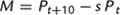

| | Footnotes | |
| |
| (Z). |
Fewer than 50.
|
| 1. |
Insufficient sample size.
|
| |
| | Sources | |
| |
1850–1870, native and foreign-born white: Integrated Public Use Microdata Series (IPUMS) 1 percent samples. 1850–1860, black: Inter-university Con-sortium for Political and Social Research, Study 0003. 1860–1870, black: IPUMS 1 percent sample with black oversample.
1870–1950: Everett S. Lee, Ann Ratner Miller, et al., Population Redistribu-tion and Economic Growth: United States, 1870–1950 (American Philosophical Society, 1957), volume 1, pp. 107–231.
1950–1960: Hope T. Eldridge, “Net Intercensal Migration for States and Geographic Divisions of the United States, 1950–1960,” Analytical and Technical Reports, number 5, Population Studies Center, University of Pennsylvania, Table A-1.
1960–1970: IPUMS 1 percent sample.
1970–1980: IPUMS 1 percent sample (Form 2, State Sample).
1980–1990: IPUMS 5 percent state samples.
| |
| | Documentation | |
| |
See the Guide to the Millennial Edition for information on IPUMS.
For the native population, the figures show the estimated amount of net internal migration. For the foreign-born, the figures represent the estimated net change attributable to direct movement into the state from abroad and the net gain or loss in the exchange of foreign-born residents with other states.
The estimates of net migration by the survival rate method were obtained by a residual method, using survival ratios derived from census data. The loss through mortality during an intercensal period was estimated on the basis of the ratios of appropriate age groups as enumerated in successive decennial censuses. The difference between the enumerated population at the end of the decennial period and the estimated survivors from the beginning to the end of the period was assumed to be net migration, using the identity

where Pt + 10 and Pt are the state's population at time t and time t + 10, s is the fraction of the time t population that is predicted to survive to time t + 10, and M is net domestic migration. Computations were by age groups for each sex, the figures being summations for ages 10 years and older at the end of each intercensal period.
Series Ac245–257. For 1870–1890, only white population in Mountain and Pacific States; no estimates made for blacks.
Series Ac362–413. For 1850–1870, free blacks and slaves combined.
Series Ac231, Series Ac283, Series Ac335, and Series Ac387. West Virginia included with Virginia, 1850–1870.
| |
| | Citation | |
| |
Ferrie, Joseph P. , “
Net intercensal migration, by race, nativity, and state: 1850–1990 [Survival rate method]
.” Table Ac206-413 in Historical Statistics of the United States, Earliest Times to the Present: Millennial Edition, edited by Susan B. Carter, Scott Sigmund Gartner, Michael R. Haines, Alan L. Olmstead, Richard Sutch, and Gavin Wright. New York: Cambridge University Press, 2006. http://dx.doi.org/10.1017/ISBN-9780511132971.Ac1-43610.1017/ISBN-9780511132971.Ac1-436
| |
|